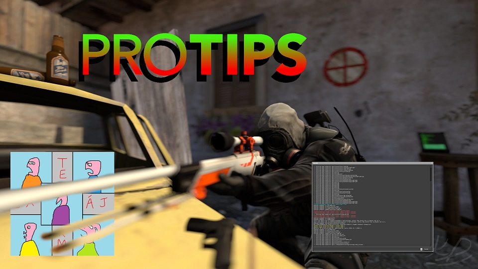

Les bO tutos
Écrire la même chose en boucle
Rédigé le 15/01/2021
Petit bonus à la fin de l'article
1. Cas d'un unique caractère
Une première solution, celle à laquelle vous avez sans doutes déjà pensé, c'est de resster appuyé sur cette touche, cependant pour des soucis d'efficacité, je vous recommande de verifier que le caractère sera répété au plus vite, pour cela allez dans le panneau de configuration chercher les propriété du clavier et mettez la cadence de répétition au maximum (je vous conseil également de mettre au maximum les autres curseurs c'est plus sympatique ainsi)

Ensuite choisissez quelques chose pour appuyer sur votre touche, cela peut être votre doigt, un cailloux, ... j'ai pour ma part utilisé la manivelle du volet qui était parfaite pour ma configuration.

Pour une répetition encore plus rapide, vous pouvez utiliser des macros via votre logiciel de macro préféré.
Une solution assez puissante mais qui peut manquer de flexibilité est d'acheter un clavier spécialisé dans le caractère que vous souhaitez reproduire
Cette solution est sans doute la plus onéreuse mais le clavier en question restera un objet de curiosité et de décoration (remarque: vous pouvez seulement acheter les touches si vous voulez conserver votre clavier).
2. Cas général
Passons aux choses serieuses, nous allons utiliser Python afin de produire ce que nous voulons depuis le début, dans un premier temps avec Python seulement puis avec une librairie pour une simplicité d'execution.
>>> 'A'*9
'AAAAAAAAA'>>> 'Aaaa aa'*9
'Aaaa aaAaaa aaAaaa aaAaaa aaAaaa aaAaaa aaAaaa aaAaaa aaAaaa aa'Je vais utiliser beaucoup de A aaaaaaaaaaaaaaaaaaaaaaa mais vous pouvez choisir ce que vous voulez, même des lettres différentes les unes des autres si vous l'osez.
Comme on est en Python, on peut faire bien plus, comme ne pas répeter exactement la même chose:
>>> s=''
>>> for i in range (8):
... s+='A' + i*'a'
...
>>> s
'AAaAaaAaaaAaaaaAaaaaaAaaaaaaAaaaaaaa'>>> s=''
>>> for i in range (8):
... s+='A' + i*'a' + str(i)
...
>>> s
'A0Aa1Aaa2Aaaa3Aaaaa4Aaaaaa5Aaaaaaa6Aaaaaaaa7'>>> L=['aaAa', 'aAAa', 'a'*4, 'AAAAAAAaa']
>>> n=len(L)
>>> s=''
>>> for i in range(12):
... s+=L[i%n]+'aA a'*(i//n)
...
>>> s
'aaAaaAAaaaaaAAAAAAAaaaaAaaA aaAAaaA aaaaaaA aAAAAAAAaaaA aaaAaaA aaA aaAAaaA aaA aaaaaaA aaA aAAAAAAAaaaA aaA a'Ou même en utilisant le code ASCII (par exemple) pour changer de lettre au fur et a mesure.
>>> a = ord('a') # donne la valeur numérique de 'a' dans le code ascii, chr() est la fonction reciproque
>>> z = ord('z')
>>> s=''
>>> for i in range(16):
... s+= chr(a + i)*i
...
>>> s
'bccdddeeeefffffgggggghhhhhhhiiiiiiiijjjjjjjjjkkkkkkkkkklllllllllllmmmmmmmmmmmmnnnnnnnnnnnnnooooooooooooooppppppppppppppp'Vous le comprennez sans doutes, le champ des possibilité est fou, quasi infini.
Mais vous me direz bien entendu "C'est bien gentil mais une fois que j'ai généré ma chaine en python, il faut que j'aille faire moi même un copié collé dans le champ qui m'interesse". C'est là qu'intervient la bibliothèque pyautogui.
Commentaires
Comments 2
SkyIsNotALimit February 2, 2021, 10:59 AM
J'ai déjà vu plus utile On va vous envahir
SU1SS3 April 1, 2021, 7:12 PM
AAAAAAAAAAAAAAAAAAAAAAAAAAAAAAAAAAAAAAAAAAAAAAAAAAAAAAAAAAAAAAAAAAAAAAAAAAAAAAAAAAAAAAAAAAAAAAAAAAAAAAAAAAAAAAAAAAAAAAAAAAAAAAAAAAAAAAA
ça
fonctionne à merveille AAAAAAAAaaaaaaaaaaaaa
AxxA
Ce tutoriel est le resultat d'heures d'ennui il y a quelques années, je tennais à faire partager cette avancée majeure.
D'autres articles:
-
 Capture vidéo sous Linux
Capture vidéo sous Linux
-
 Lecture multimédia depuis le terminal
Lecture multimédia depuis le terminal
-
 Libérons cette caisse
Libérons cette caisse
-  Écriture en boucle